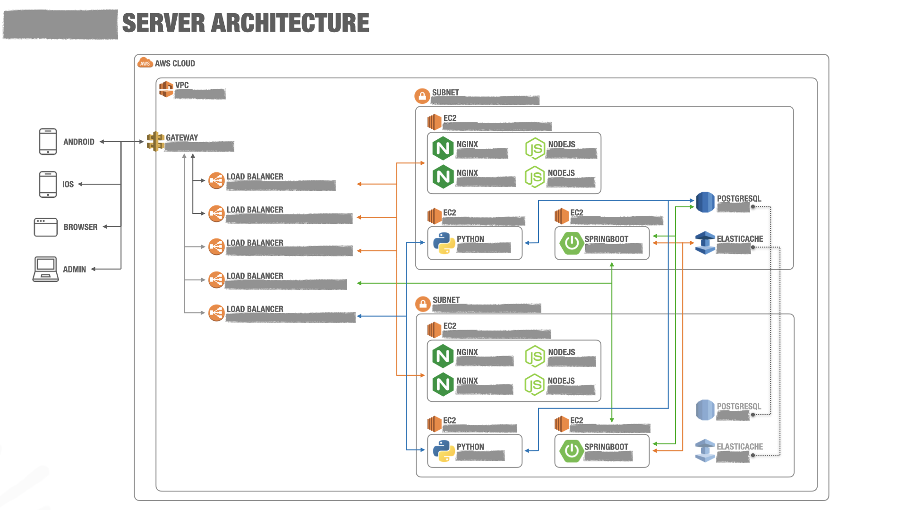
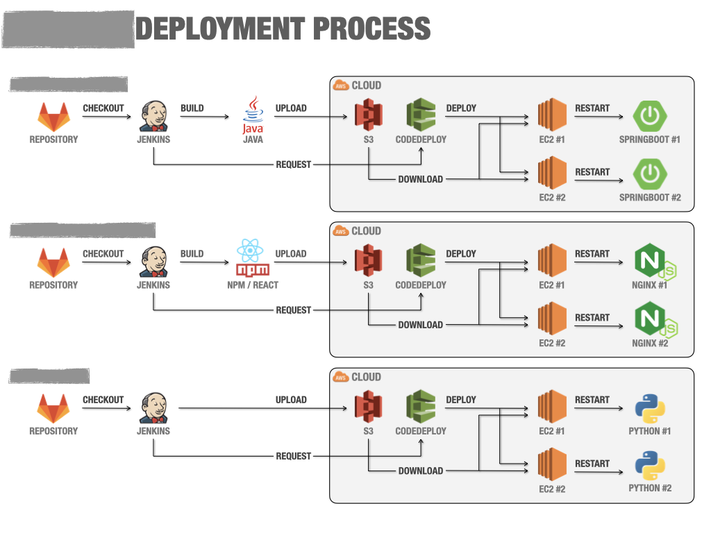
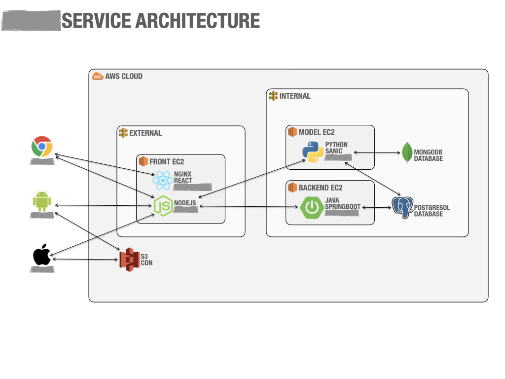
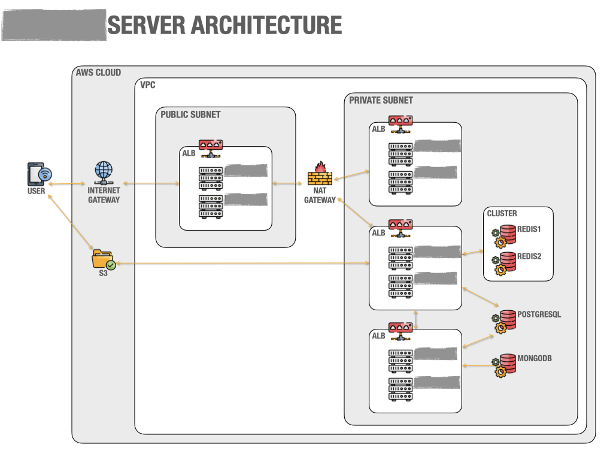
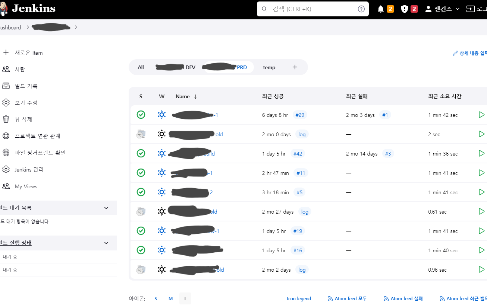
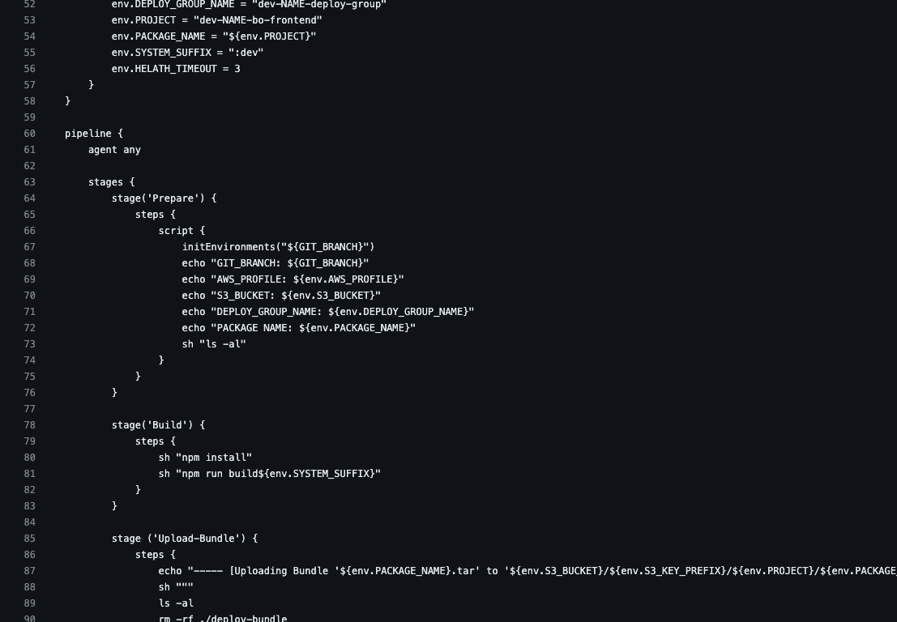
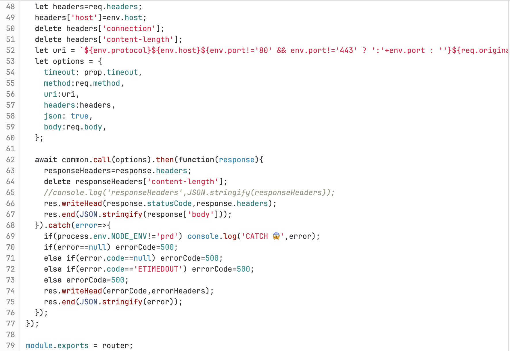
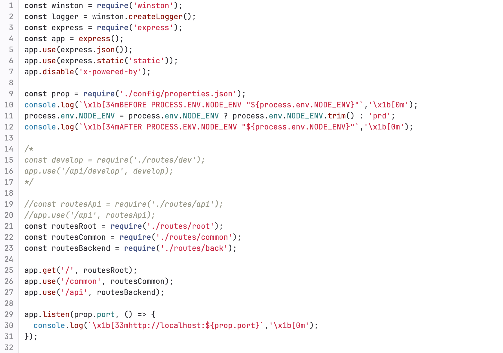
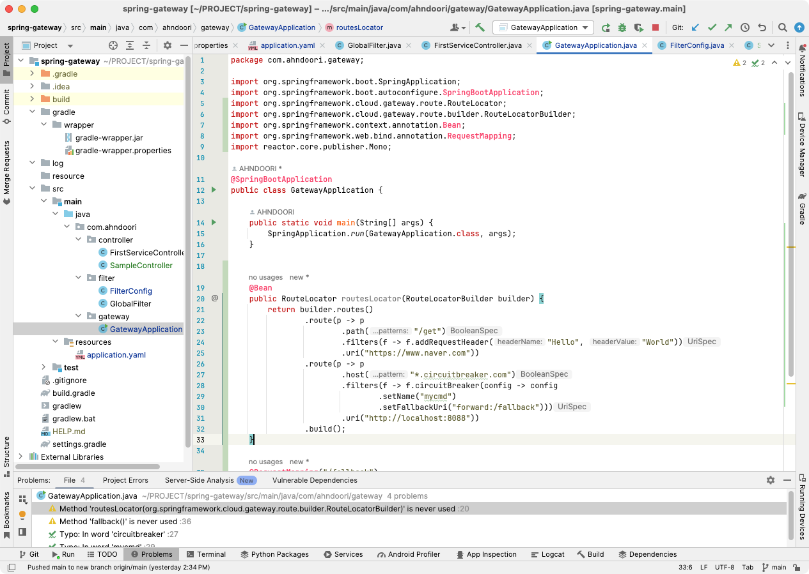
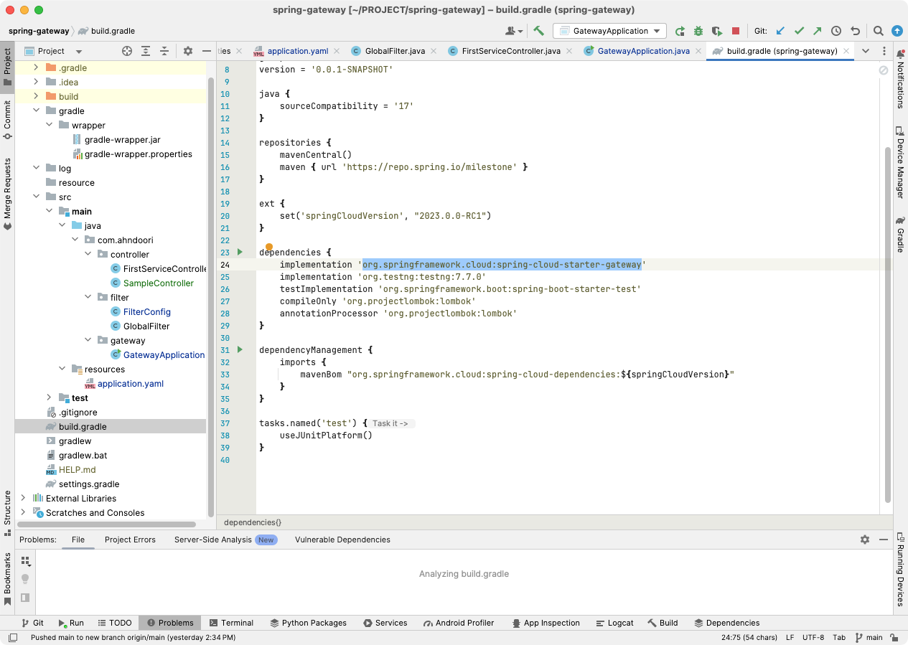

Technique & Skills
Architecture Diagram
- 웹 서비스 아키텍쳐 구성
- Android/iOS와 API 서비스 아키텍쳐 구성
- 시스템 운영/배포 아키텍쳐 구성




개발환경 구성
- JAVA Spring, SpringBoot, 스프링기반의 모든 프레임워크 (전자정부, AnyFrame, LafJ, DevOn...)
- NodeJS (Express...), React, Python (Flask, Sanic...)
- 데이터베이스 연동 Oracle, MS-SQL, MySql, PostgreSQL...
CI/CD
- Jenkins, AWS (CodeCommit, CodePipeline, CodeDeploy) 배포 자동화
- 기타 여러 클라우드 시스템 상에서 배포 시스템 구축


서버 구축
- Cloud, Linux, Windows 서버 구축
- Tomcat, Jeus, Weblogic, Nginx, NodeJs, Python, PM2...
공통모듈 개발
- Grid, File I/O, 솔루션 연동, 배치, CORS, RestFul, Gateway, Relay, JWT, OAuth ...
Batch Process
- Spring Batch, Linux CronTab, AWS Batch...
AWS Auto-Scaling
- EC2, Machine Image, Launch Template등을 이용하여 서비스 사용량에 따른 적절한 시스템 대응
AWS Blue/Green Deployment
- EC2, ELB, AMI등을 활용하여 롤백가능한 무중단 배포 구성
Relay Service
- 중계서버, 릴레이서버, 게이트웨이서버 등으로 불리우며, 방화벽이나 DMZ의 구성으로 접근이 불가능한 WAS나 API를 외부와의 통신이 가능하도록 어플리케이션 서버 구축
- NodeJS, JAVA, Springboot Cloud Gateway, Servlet등으로 개발




kaudo@msn.com